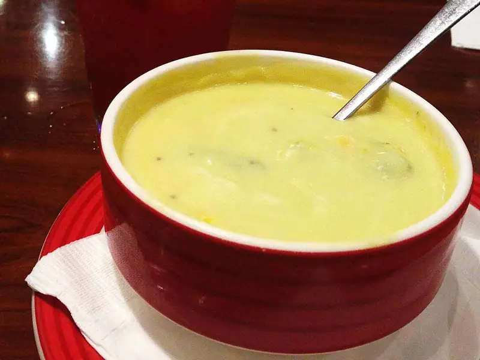

Фото: John Ong from Chicago, U.S.A., CC BY 2.0

Сырный суп
Вегетарианский суп с картошкой и тёртым сыром на воде
35 мин4 порц.374 ккал на порциюБ 17 · Ж 23 · У 25Русская кухня
Продукты на 4 порц.
- Вода1,5 л
- Картофель4 шт
- Морковь1 шт
- Лук репчатый1 шт
- Сыр твёрдый200 г
- Сливки 20%100 мл
- Сливочное масло20 г
- Соль1 ч. л.
- Перец чёрный молотый1 щеп.
- Укроп по желаниюпо вкусу
Как готовить
- Доведите воду до кипения на сильном огне, посолите.
- Положите картофель кубиками, натёртую морковь и мелко нарезанный лук. Варите 15 минут на среднем огне, пока картофель не станет мягким.
- Сыр натрите на мелкой тёрке.
- Убавьте огонь до слабого, добавьте сливки и масло.
- Всыпайте сыр по горсти, постоянно помешивая, пока он полностью не растворится, 3-4 минуты.
- Поперчите, выключите огонь и посыпьте укропом.
Совет. После сыра суп не кипятите, иначе сыр свернётся хлопьями. С плавленым сыром суп получается ещё нежнее.